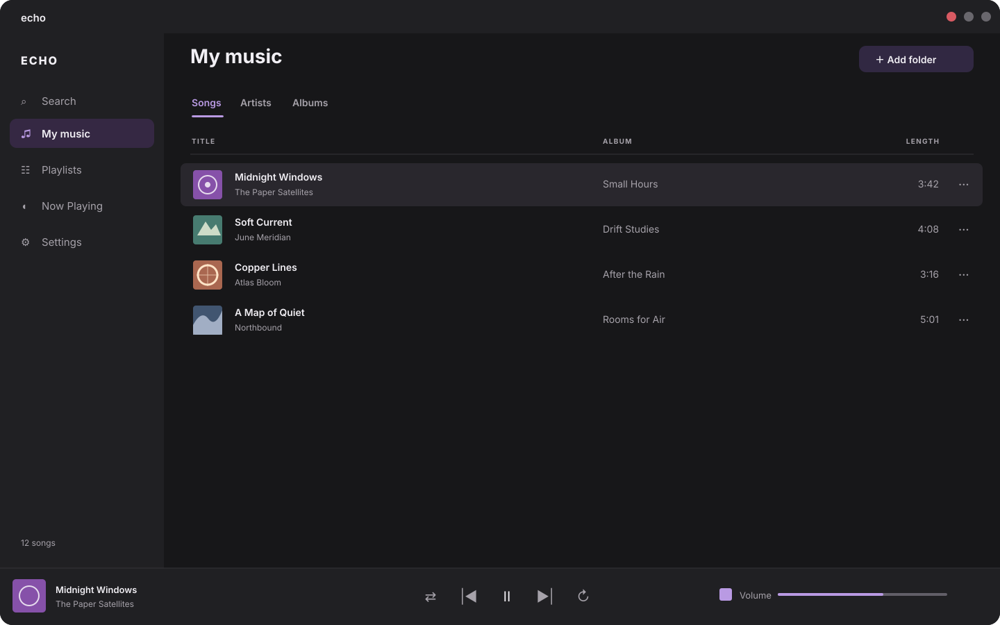
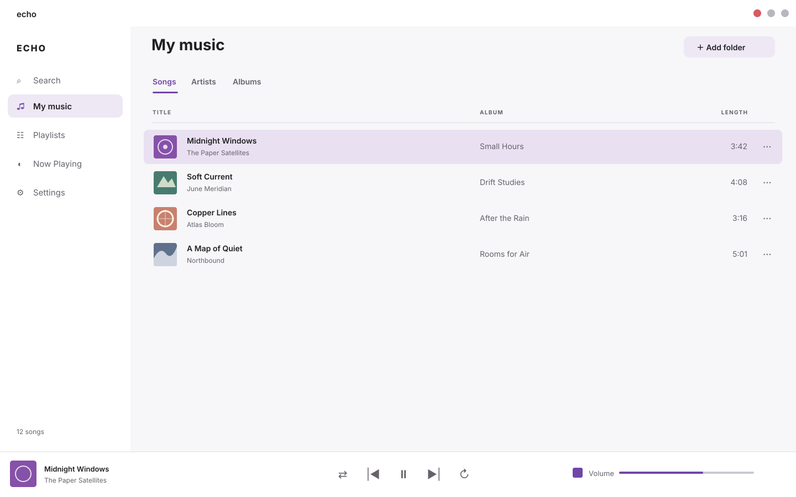
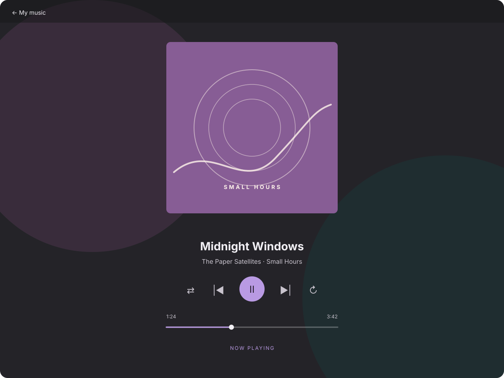

Find your next track
Browse and search your local music library without missing a beat.
Echo is a Linux music player for organizing and playing your local music collection.
Prefer a portable archive? Download the .tar.gz.
Take a look around your music library.



Your collection, easy to find and a pleasure to play.
Browse and search your local music library without missing a beat.
Organize your favorite tracks into playlists that fit every moment.
Import and export M3U playlists to keep your listening organized.
Keep playback in your hands with shuffle and repeat controls.
Install the Debian package with your software installer, then find Echo in your Multimedia menu.
Read the latest release notessudo apt install ./echo_0.1.0_amd64.debA little more about getting started with Echo.
The Debian installer is for Linux amd64 systems with the required GTK libraries. A portable x86_64 archive is also available.
Yes. Echo is made for organizing and playing your local music collection.
Open the downloaded .deb package with your system software installer, or run sudo apt install ./echo_0.1.0_amd64.deb from its folder. Echo should appear in your Multimedia menu.
Get Echo 0.1.0 for Linux amd64.